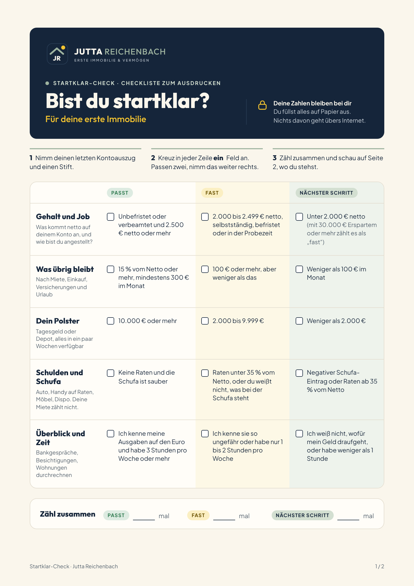

Plan fürs neue Jahr?
Draußen ist Winter. Drinnen planst du deine erste Wohnung.
Kostenloser Startklar-Check, zwei Minuten.
Zum Check
Neun Fragen, zwei Minuten. Dann weißt du, wo du stehst und was dir noch fehlt.
Die anderen sechs Fragen und deine Auswertung bekommst du im Startklar-Check.
Die Startklar-Checkliste: zwei Seiten, ein Stift, dein Kontoauszug.

Verstehe ich. Deshalb gibt es den Startklar-Check auch als Checkliste zum Ausdrucken.
Kreuzchen setzen, zusammenzählen, fertig.
Ob du startklar bist, hängt an mehr als einer Zahl: an deinem Job, an dem, was übrig bleibt, an deiner Schufa. Schau dir alles zusammen an.
Dazu bekommst du deinen Plan mit den nächsten Schritten per Mail.
Kostenloser Startklar-Check, zwei Minuten.

Neun Fragen, und du weißt, was dir noch fehlt.

Der Startklar-Check auf Papier.
Kostenlos. Und deine Zahlen bleiben bei dir.

Meine Checkliste für deine erste Wohnung: zwei Seiten, kostenlos. Ich habe selbst mit einer einzigen Wohnung angefangen.